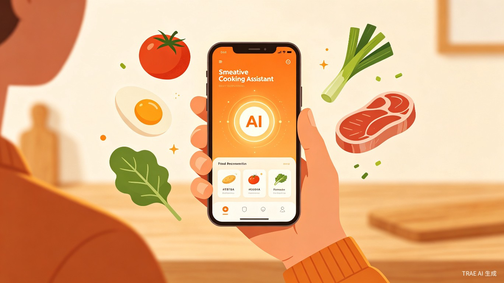
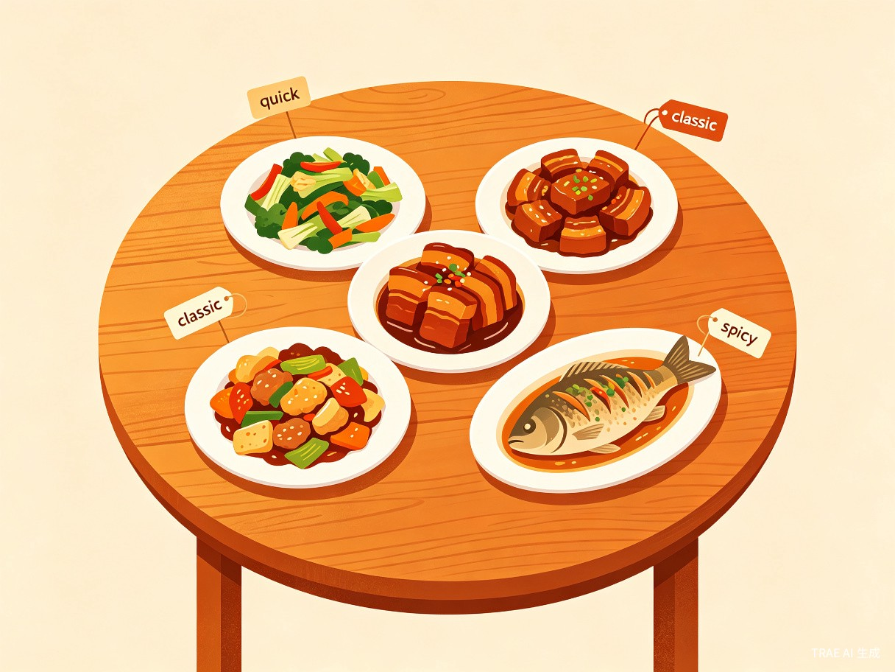
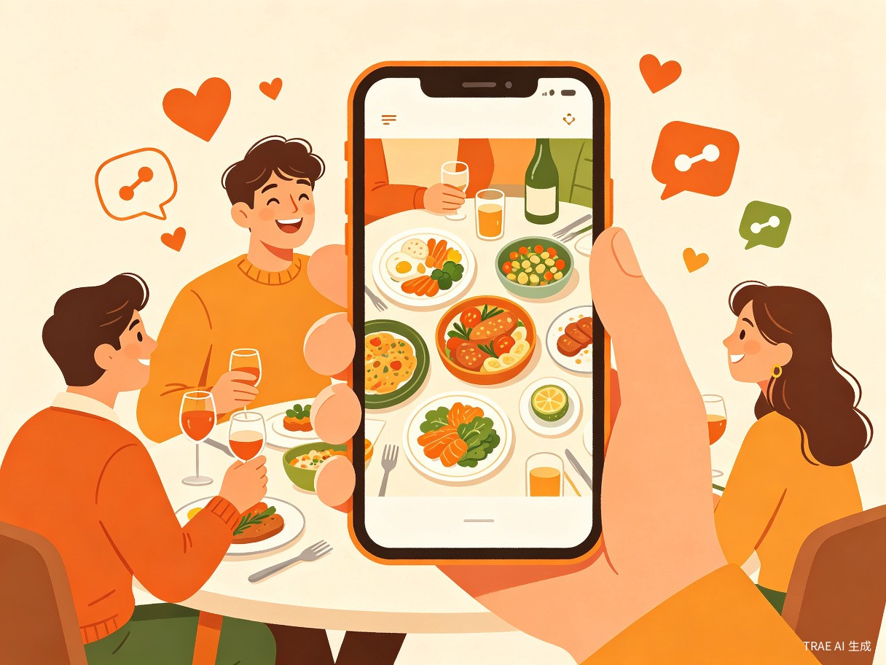

每天到了准备做饭前，「都要想今天吃什么,买什么菜.」几乎是所有人都会遇到的日常决策困境。打开传统菜谱App面对海量菜谱，却不知道该选哪道——这种「选择困难」(或去菜市场乱逛)不仅浪费时间，还常常让人陷入焦虑，最终随便应付一餐。
灵感来源于生活中最朴素的场景：家庭主妇/夫每天会问或自言自语"今天买什么菜呢?"。要么去菜市场乱逛，要么使用传统菜谱APP，我们发现，传统App的逻辑是「人找菜」——用户需要主动搜索关键词、浏览分类、筛选结果，整个流程需要用户具备明确的目标。但现实中，大多数人的状态是「我不知道想吃什么，你帮我决定」。随着大语言模型（LLM）技术的成熟，AI已经具备了理解口味偏好、生成完整菜谱的能力，这让我们看到了将「人找菜」翻转为「菜找人」的可能性。
一款基于AI大模型的微信小程序，用户只需选择一些基本参数，AI即可智能生成一桌荤素搭配、营养均衡的完整菜谱方案，并以模拟真实餐桌的沉浸式视图呈现给用户，同时支持一键分享至好友。
核心用户群体为 20-70岁人群，具体包括：
通勤途中打开小程序，快速获取今天的菜谱方案，顺便在回家路上买齐所需食材。
每天到了准备做饭前，不知道吃什么/买什么，打开小程序，获取今天的菜谱方案。
需要准备一桌像样的饭菜招待亲友，选择人数和偏好，AI规划完整菜单。
如果没有这个产品，用户当前面临以下不便：
| 痛点 | 具体表现 | 影响 |
|---|---|---|
| 决策困难 | 面对海量菜谱不知道选什么，每天花10-20分钟纠结 | 时间浪费、情绪焦虑 |
| 营养不均 | 缺乏专业搭配知识，经常荤素失衡 | 健康隐患 |
| 重复单调 | 翻来覆去就那几道菜，缺乏新意 | 烹饪兴趣下降 |
| 搜索低效 | 传统App需要主动搜索，不知道关键词时无从下手 | 使用门槛高 |
传统菜谱App的菜谱是人工录入的，数量有限且更新缓慢。我们的产品让AI实时生成菜谱，这意味着菜谱库是「无限」的——任何口味偏好和用餐需求都能得到量身定制的方案。AI不仅会推荐经典家常菜，还能创造性地建议跨菜系融合做法，让每一餐都有新鲜感。
AI生成的菜谱不再是冰冷的列表，而是以两种极具创意的可视化方式呈现：

传统模式是用户想吃什么然后去搜，我们的模式是「告诉AI你的偏好，AI帮你决定」。用户只需选择几个简单参数（口味、人数、等），AI即可生成完整方案。这种参数驱动的推荐极大降低了使用门槛——用户不需要知道菜名、不需要会搜索，只需要表达自己的偏好。
慢慢想吧~

用户只需两步操作：选择参数 → 点击生成，即可在30秒内获得一桌完整的菜谱方案。相比传统方式（打开App → 搜索 → 浏览 → 筛选 → 决策），效率提升数十倍。对于每天都要面对这个决策的用户来说，累计节省的时间非常可观。
AI在生成菜谱时会考虑荤素搭配和营养均衡，潜移默化地引导用户养成更健康的饮食习惯。同时，通过科学的菜谱规划，帮助用户从「随便应付」转变为「认真吃饭」，提升整体生活品质/乐趣。
即使有，到后期各种买菜应用（如*团买菜、叮*买菜）都做的。(事实上他们早该做这功能了)。
本项目融合了以下创新方向：